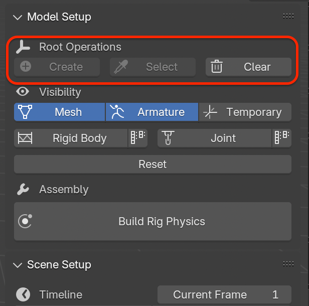
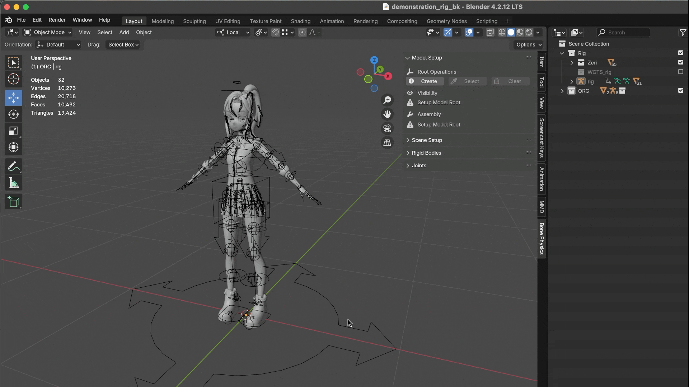
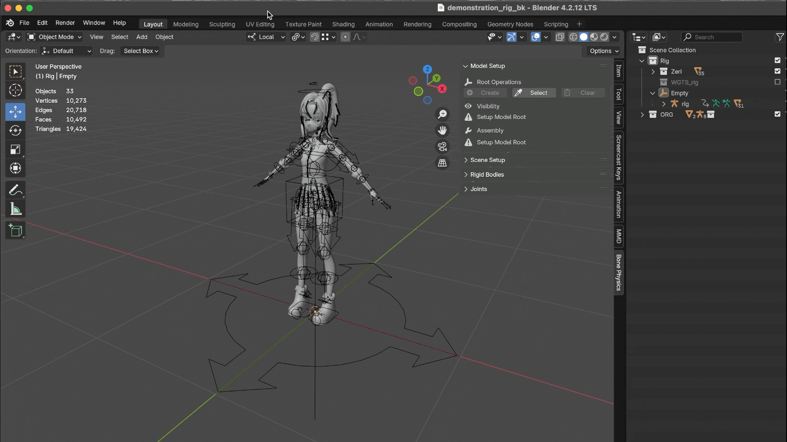
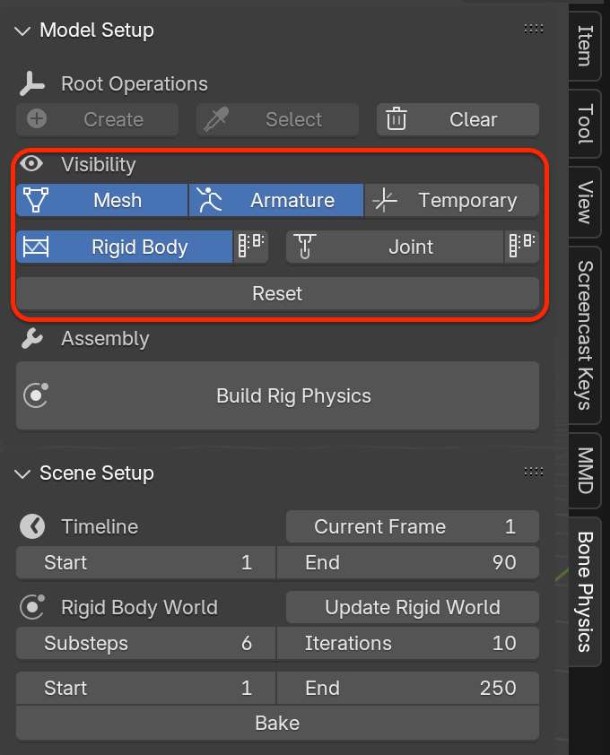
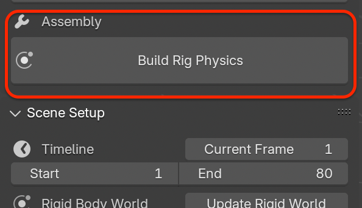

模型设置
检查模型
在开始之前，请确保骨架模型已经正确准备。
请确保顶点权重分配正确，尤其是参与物理模拟的骨骼。错误或重叠的权重是导致模拟异常的最常见原因之一。
重要
- 将模型放置在世界原点（0, 0, 0）。
这样可以更方便地与其他资源对齐，并在导出时保持一致性。
- 面向 -Y 轴方向。
在 Blender 中，按照惯例角色通常面向负 Y 方向。这样可以更好地兼容许多插件、绑定工具以及导出流程（例如用于游戏引擎）。
- 应用所有变换（）。
在进行绑定或运行模拟之前，请确保位置（Location）、旋转（Rotation）和缩放（Scale）都已经应用。未应用的变换可能导致骨骼行为异常、物理结果错误，或者在导入其他软件时出现比例问题。

Root 操作
{kind=link}

Root Operations 的作用是为当前骨架模型设置一个空对象（Empty）作为 Root Empty。通过该 Root 对象，可以将物理模拟所需的所有辅助元素 —— 例如刚体（Rigid Bodies）、关节（Joints）或临时辅助对象 —— 统一组织在同一个父级之下。
这种方式可以更清晰地管理多角色场景。例如：
链接（Linking） 和 库覆写（Library Overrides） 会变得更加简单，因为你只需要链接一个集合。
你也可以将一些自定义用途的对象附加到 Root 上，例如特效发射器、摄像机对焦目标。
该插件要求每个骨架模型都必须放置在一个 Root Empty 之下。
警告
这是插件组织物理数据的核心结构。如果这种工作流程不适合你的项目，那么该插件可能不适合你的制作流程。
通常有两种情况：
创建 Root
该操作会创建一个新的 Empty 对象，并将其设置为所选骨架模型的父级，作为 Root。

你可以设置 Empty 的 名称 (Name)、显示类型 (Display Type) 和 缩放 (Scale)。
Root 会创建在 骨架当前位置，并自动成为其父对象。（因此建议将骨架放置在世界原点）
创建 Root 后，骨架的 Transform （位置 Location、旋转 Rotation、缩放 Scale）将被锁定。
最后，骨架会被设置为 Show In Front（始终显示在前），以便在其他物体前方保持可见。
选择 Root
该操作允许你将所选骨架的现有 直接父级对象 指定为 Root。

目前仅支持作为 直接父级 的空对象（Empty）。
虽然 Empty 不一定必须与骨架原点重合，但建议将它们对齐，以获得更清晰的变换结构。
选择 Root 后，骨架的 Transform （位置 Location、旋转 Rotation、缩放 Scale）将被锁定。
最后，骨架会被设置为 Show In Front（始终显示在前），以便在其他物体前方保持可见。
清理
该操作会移除 rigidbodies、joints 和 temporary 组下的所有刚体与约束。同时也会解除骨架 Transform （位置 Location、旋转 Rotation、缩放 Scale）的锁定。执行 操作后，如果不再需要 Root Empty，你也可以选择将其删除。
小心
可见性
你可以使用 Visibility 区域中的按钮来显示或隐藏场景中的相关对象：
{kind=link}

— 显示或隐藏模型网格。
— 显示或隐藏骨架。
— 显示或隐藏所有用于模拟的刚体对象。
— 在视口中显示或隐藏刚体名称，有助于识别和调试复杂的设置。
— 显示或隐藏连接刚体的关节（Rigid Body Constraints）。
— 在视口中显示或隐藏关节名称，以便更容易检查。
— 显示或隐藏设置过程中生成的辅助或临时对象。
— 将所有可见性选项恢复为默认状态。
构建 Rig 物理
在添加完所有 刚体 和 关节 之后，点击 按钮以生成物理模拟系统。
{kind=link}

在此过程中，插件将会：
临时禁用 Parent 约束 和 IK 约束，以避免与物理解算器发生冲突。
识别没有父骨骼的刚体，并根据其连接的关节建立 虚拟父级关系（fake parent relationships）。
重建刚体层级结构，并更新其 Transform，使其与当前骨架姿态保持一致。
在不应发生碰撞的相邻刚体之间自动创建非碰撞约束 (NCC)，以提高稳定性并避免不必要的相互穿插。
对于动态骨骼，会附加隐藏的 Empty 对象作为跟踪目标（bone_physics_rigid_track），从而通过
COPY_TRANSFORMS或COPY_ROTATION约束使骨骼能够被刚体驱动。在系统完全初始化后恢复并同步所有约束状态。
构建完成后，会出现 按钮。点击该按钮可以移除已构建的模拟系统，并将 Rig 恢复到构建之前的状态。
警告
在执行任何物理构建或清理操作之前，请务必 保存你的项目。
备注
如果你使用的是 单文件工作流程，请特别注意操作顺序。在 完成后，可以通过播放时间轴预览模拟。预览完毕，在清理之前请严格按照以下步骤操作：
暂停时间轴播放。
按 Shift + ← 将时间轴重置到第一帧。
点击 。
如果在清理之前没有重置时间轴，可能会导致 Blender 崩溃。这是因为在移除 Rig 层级结构和约束时，物理系统仍在运行模拟，从而引发依赖关系冲突。
在 多文件协作工作流程 中，动画师可以在编辑动画之前执行 来临时禁用物理系统，并在需要时重新构建。